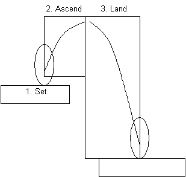

I've been working on path planning (path finding) for platformer games for a while. My original intention was to create a reusable framework for scripting characters in a platformer, but it can have other interesting applications. I have a working prototype and its source code.
The first problem that we need to address is the continuous nature of a platformer game. In a typical path planning, a problem is usually represpented as a discrete space. However, in a platformer game where characters often are affected by gravity, handling its continuous movement is crucial. We addressed this issue by dividing the problem into two layers: macro-level planning and micro-level planning. The macro-level planning takes care of a coarse-grained plan such as "go to this block" or "jump here and try to land at that block". The micro-level planning takes care of more fine-tuned movement that involves a continuous 2-D space. The macro-level planning is done by using typical AI techniques like a navigation mesh, constructing a set of possible actions at each discrete location. The micro-level planning is done in a more greedy manner, by taking care of physical collisions and character coordinates.
The macro-level planning can be implemented with a pretty straightforward Dijkstra or A* search. It starts from the goal position, and iteratively searches all the possible movements until it reaches the initial state (the position of the character). Each action is associated to its next action until it reaches the goal, forming a DAG structure. A plan graph can be dynamically constructed and periodically updated based on the current state of the game. Additional restrictions (e.g. space constraints and ladders) are also considered.

When each action is executed, a character is entirely controlled by that action, and the character cannot execute the next action until the current action is finished. Each action only considers the starting and ending point, and it moves the character in a rather straightforward way. When the macro-level planner detects the situation change (e.g. the goal is moved) during the execution, the current plan is abandaned after the action is finished and a new plan graph is created.
Jumping and falling is the key element of platformer games and the core of its planning problem. It has so many parameters that using naive methods will easily lead to computational explosion. In the proposed method, the macro-level planner only takes care of its starting point and ending point in the block coordinates. The planner has to know in advance the speed of a character in question and its jump impulse, as well as the gravity acceleration, so that it can know where it will exactly land. The macro-level planner uses two bounding boxes (a jumping part and a falling part) to approximate the clearance that a character needs, but it doesn't take care of an actual trajectory of the character.
An actual jump action is divided into three steps. First, it tries to move the character to its starting position (Set), maneuver the character movement during ascending (Ascend), and then land the character to the ending position (Land). It takes a precise (pixel-wise) control of the character at each frame update.

The planner can find a solution only when the path planning is solvable. When a character is following another character that is jumping or falling, the goal position is often considered unreachable, making it impossible to find a solution. In a case like this, the planner can optionally make a guess of the final landing position based on the current speed of the character.
A path finding is based on an assumption that the floor map you're planning on is static. When there are some parts that are changing dynamically, those parts need to be handled specially by the micro-level planner. In this case, the macro-level planner only takes care of moving into that part and getting out of it.
Handling moves like sprinting or double jumping can be more tricky, because such actions depend on the current state of a character. In other words, a plan becomes context-dependent. Now we would have to consider multiple possible states at each grid, making the search space several times larger. I am not sure if we can find a really good solution for this kind of planning, but in theory we can still take this into account in the current framework.
The prototype is written in ActionScript. However, the planning parts are separated from the UI and I believe it's relatively easy to port them to another language. Here are a couple of important classes:
Actor
move(x, y), jump()
to perform actions on each character, as well as query methods such as
bounds().
TileMap
getTile(x, y) as well as
range queries like "if there's a certain block within this area" in order to
serve the efficient planning.
PlanMap
TileMap object, so that an Actor can query
a possible action to take at each place. An action,
which is a PlanAction object, is represented as
an edge of a plan graph. There's one important method addPlan(),
which fills the grid according to the given parameters and the associated
TileMap.
A plan graph can be shared and reused as long as the goal is not changed
and all the Actors has the same property (e.g. speed, gravity, etc.).
PlanAction
Unfortunately, no. Due to computational limits, the current implementation considers only a handful of ways of possible jumps at each position. Since it uses a rectangle as an approximation of jump trajectory, it cannot emulate a complex manuever that humans could do. Also, since it's on block-by-block basis, it cannot consider a possibility of barely-make-it kinds of jumps. These are mostly complexity problems, but in some cases there might be need to give up to find an optimal solution.